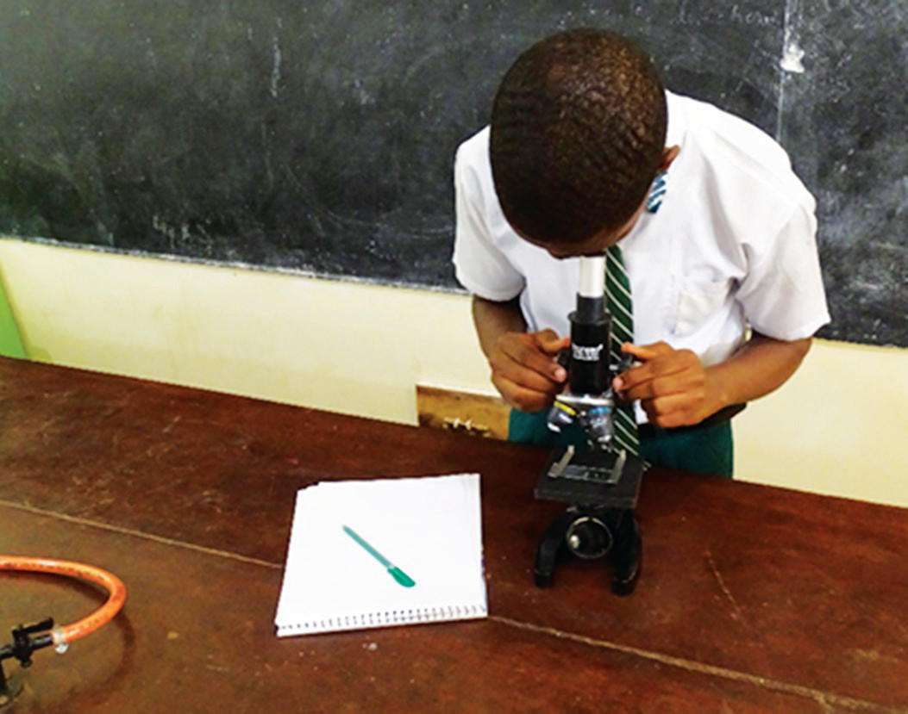

Uses of a compound microscope
Compound microscopes have a wide range of applications in different aspects of life. Some of the applications of compound microscopes include:
- (a) Viewing laboratory small samples such as tissues and body fluids to check for infections caused by microorganisms;
- (b) Studying micro-organisms and cells in Biology experiments; and
- (c) Observing the Brownian motion of fluid particles. Figure 6.6 shows a student observing something using a compound microscope.

Construction of a simple compound microscope
One can easily construct a simple optical compound microscope. Activity 6.1 illustrates the steps for constructing a simple compound microscope using local materials.

Activity 6.1
Aim:
To construct a simple compound microscope
Materials:
two convex lenses, hard manila sheets (coloured black), scissors, cutter, rubber disc, drill, a film canister or a small plastic container, plywood, a wooden stick
Procedure
- 1. Use the black manila sheets to construct two tubes with slightly different diameters such that the smaller tube can slide into the larger tube. Make sure each tube is longer than the focal length of your lens.
- 2. Fix a lens to one end of each tube.
- 3. Slide the small tube inside the larger tube such that you have one tube with a lens on both sides of the tube.
- 4. Cover each side of the tube with a rubber disc to protect the lenses.
- 5. Drill a hole at the bottom of a canister.
- 6. Insert the smaller tube into the open end of the canister to about half the length of the canister. Ensure that the lens coincides with the hole drilled on the canister.
- 7. Use a square piece of plywood or plastic to set your base. The square should have 10 cm sides. Attach a white sheet at the middle of the base to act as the stage.
- 8. Use a wooden stick to create a vertical stand. Make the stand 2 cm tall.